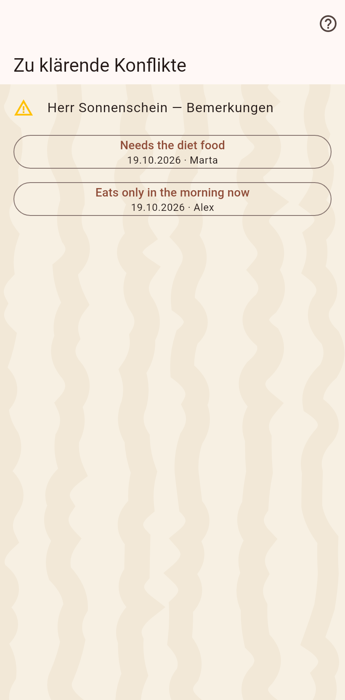
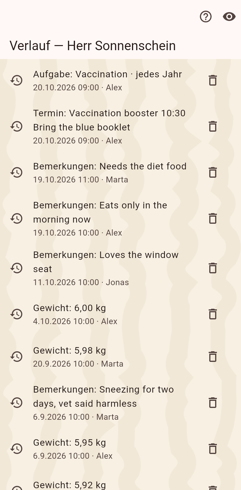

1. Der Konflikt
Die Zeile zeigt beide Werte mit dem, wer sie schrieb und wann. Ein Tipp behält einen; die Wahl ist ein gewöhnlicher Eintrag, der jedes Gerät erreicht.

2. Danach
Die Zeitleiste zeigt die Entscheidung als neuesten Wert; der unterlegene bleibt im Verlauf.
